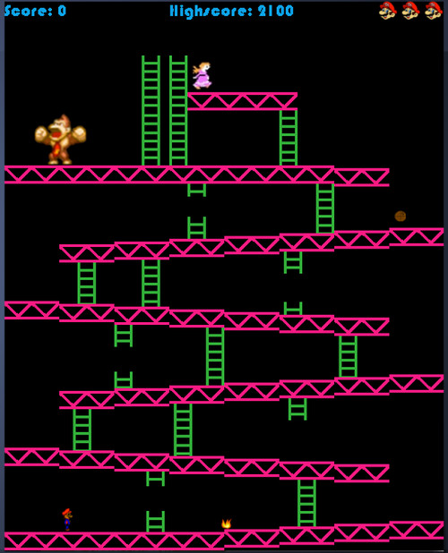
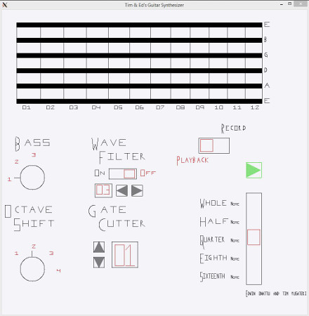

In the Spring of 2014, I worked on team project to recreate an SDL 1.2 implementation of Arcade Donkey Kong. Written entirely in C++, the game allows the user to play through the first two levels of Donkey Kong, just like it was back in the arcades of the 80s. The game is heavily object-oriented, and you can clone the project respitory here!

In the Fall of 2013, I worked with a partner to design and build a basic synthesizer with a guitar-like interface. Built in a Linux environment, the synthesizer utilizes the system playback function to play digital waveforms. The GUI, shown above, allows the user to instantly playback the notes on the neck of a guitar as well as record a string of notes for later playback. Additionally, the program provides a number of effects, such as distortion and a Gate Cutter, for the user to customize tones. The program is written completely in C and uses a basic graphics library to render the GUI. My partner and I were inspired to create this program from our shared love of music and experience with synthesizer programs like Fruity Loops and Reason. The code is currently under construction so that it may be run on more platforms and will be available on this website soon!
Starting in the spring semester of 2014, I began working as an undergraduate researcher in Notre Dame's Emotive Computing Lab under Professor Sidney D'Mello. I continued to work in the lab during the summer of 2014 as an REU project, and I will continue working in the lab in the spring of 2015 when I return from studying abroad. The project I worked most closely with is currently researching how to detect mind-wandering and boredom in people reading or watching a computer screen. We use sophisticated facial measurement software and machine learning programs to do this. This is a joint project with the University of Notre Dame and Memphis University. You can learn more about the project here.
Building my own website is something that I've wanted to do for quite a while, and I don't plan to stop improving this homepage. Since the summer of 2014, I've been using this domain to learn the basics of HTML and CSS. Everything you see on this page I have written from scratch, without the aid of webdesign templates like WordPress. It's a work in progress and certainly has a way to go, but I've found the process to be a great way to start learning the basic of web design. If you have any comments or suggestions, I'd love to hear them! Feel free to shoot me an e-mail at the address listed in the Contact Me section.
e-mail: tpusater@nd.edu